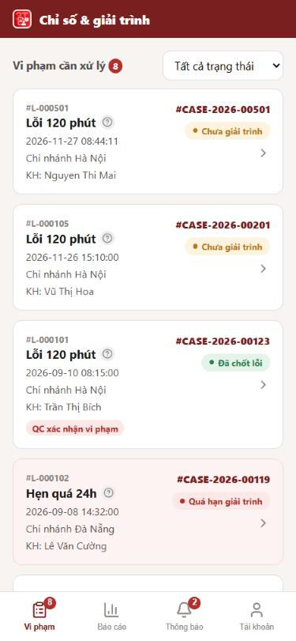
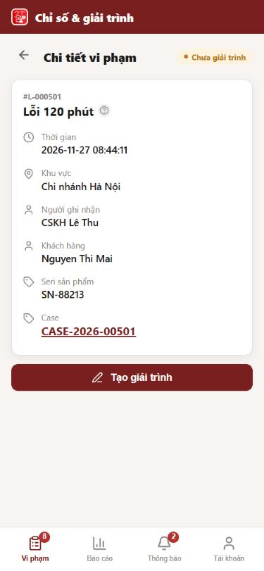
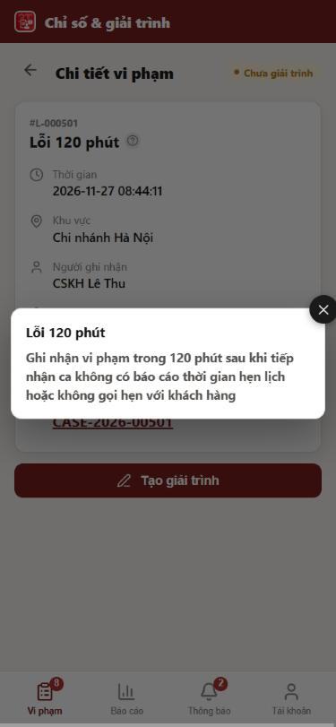
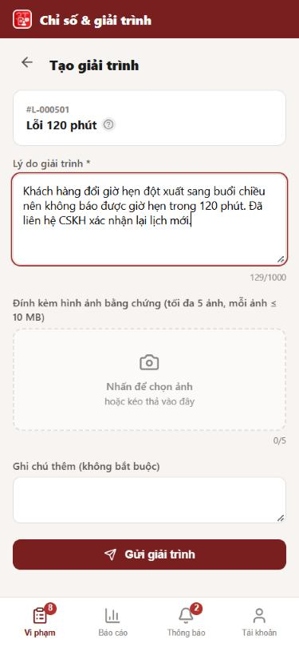
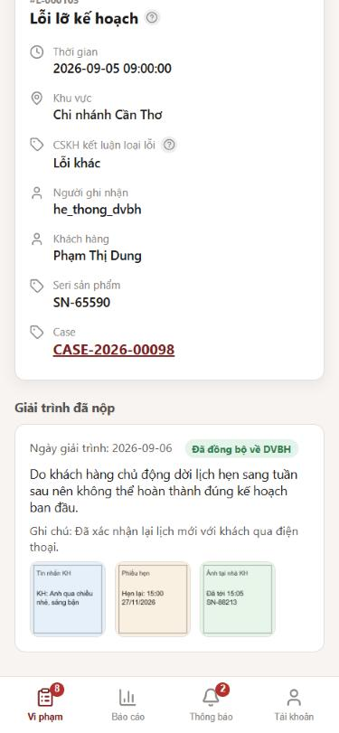
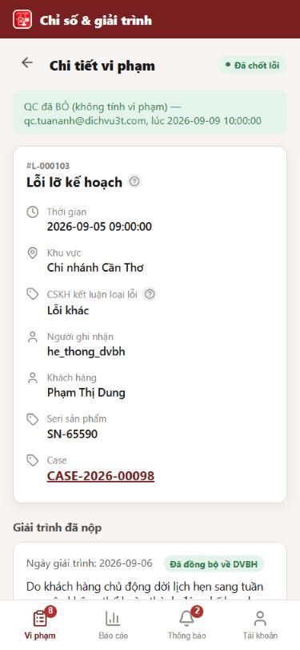
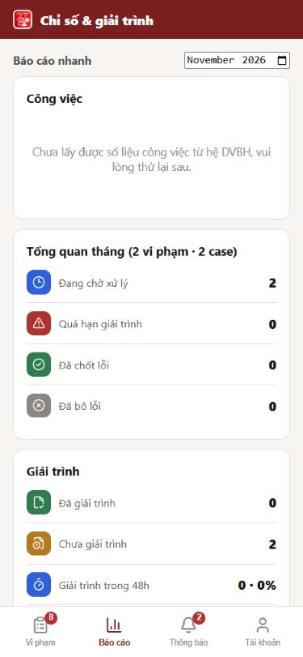
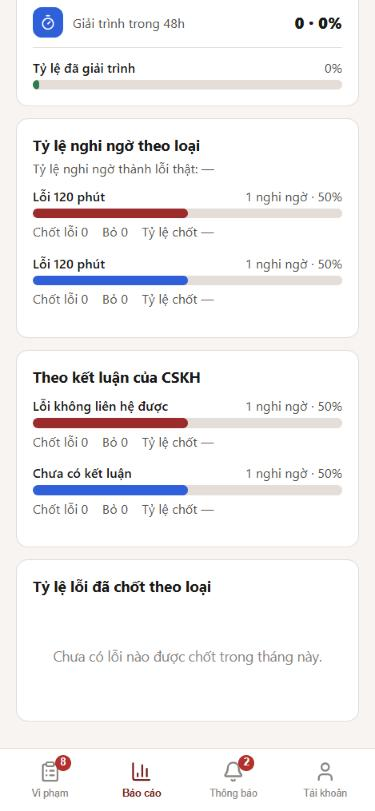
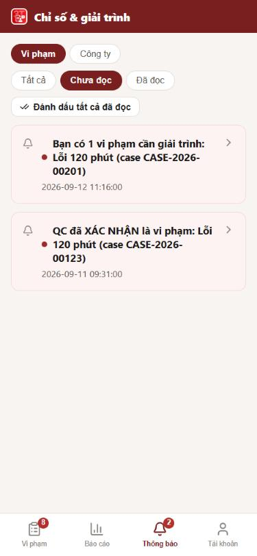
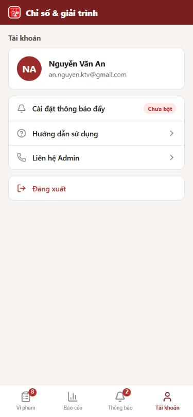

Mục lục
1 Tổng quan (5W1H)
| Who · Ai | KTV / CTV là người dùng chính: xem và giải trình vi phạm của chính mình. Giám sát, QC, Admin xem giải trình của KTV và chốt lỗi. |
|---|---|
| When · Khi nào | Mỗi khi hệ thống DVBH ghi nhận 1 vi phạm cho ca của bạn (bạn nhận thông báo). Nên giải trình trong 48 giờ kể từ lúc ghi nhận. |
| Where · Ở đâu | Trên điện thoại: mở app từ biểu tượng trên màn hình chính hoặc từ Cổng ứng dụng 3T, hoặc vào thẳng vipham.dichvu3t.workers.dev. Máy tính dùng được, cùng tài khoản. |
| What · Làm gì | Xem danh sách vi phạm, đọc giải thích loại lỗi, xem case gốc, nộp giải trình (lý do + tối đa 5 ảnh bằng chứng), theo dõi kết quả QC và chỉ số tháng. |
| Why · Vì sao | Giải trình rõ ràng, có ảnh là căn cứ để QC bỏ lỗi khi lỗi không do bạn. Không giải trình thì vi phạm dễ bị chốt và tính vào chỉ số của bạn. |
| How · Cách làm | Tab Vi phạm → bấm vào vi phạm → Tạo giải trình → nhập lý do → đính kèm ảnh → Gửi giải trình. Chi tiết ở mục 6. |
Thanh dưới cùng của app có 4 tab: Vi phạm · Báo cáo · Thông báo · Tài khoản. Số đỏ trên tab = số việc cần xử lý / thông báo chưa đọc.
2 Đăng nhập & cài đặt lần đầu
- Mở app, bấm Đăng nhập bằng Google, chọn đúng Gmail đã khai với công ty.
- Lần đầu, tài khoản ở trạng thái Đang chờ duyệt — báo Admin / Giám sát để được duyệt. Được duyệt rồi thì lần sau vào thẳng app.
- Thêm app vào màn hình chính (tab Tài khoản → "Thêm vào màn hình chính"):
- Android: bấm "Cài đặt" / "Thêm" khi hộp thoại hiện ra (hoặc menu ⋮ của Chrome → "Thêm vào Màn hình chính").
- iPhone (Safari): nút Chia sẻ (ô vuông có mũi tên) → "Thêm vào MH chính" → "Thêm".
- Bật thông báo đẩy: tab Tài khoản → "Cài đặt thông báo đẩy" → cho phép khi điện thoại hỏi. Nhãn chuyển từ Chưa bật sang Đã bật.
3 Quy trình 1 vi phạm
Quá 48 giờ mà chưa nộp: bước 2 chuyển thành Quá hạn giải trình — vẫn nộp được, nhưng nên nộp ngay.
| Trạng thái | Nghĩa là | Bạn cần làm |
|---|---|---|
| Chưa giải trình | Vi phạm mới, còn trong 48 giờ kể từ lúc ghi nhận. | Mở và nộp giải trình càng sớm càng tốt. |
| Quá hạn giải trình | Đã quá 48 giờ, chưa nộp. Thẻ có nền hồng. | Vẫn nộp bình thường (app không chặn), nhưng làm ngay. |
| Chờ chốt lỗi | Đã nộp giải trình, QC chưa quyết định. | Không cần làm gì, chờ thông báo kết quả. |
| Đã chốt lỗi | QC đã quyết định: xác nhận vi phạm hoặc bỏ (không tính). | Xem kết quả trong chi tiết. Không thao tác thêm. |
| Đang chờ đồng bộ | Nhãn phụ: giải trình đã lưu nhưng chưa gửi xong sang DVBH. | Không cần nộp lại — hệ thống tự gửi lại mỗi giờ. |
4 Danh sách "Vi phạm cần xử lý"

- Mới nhất ở trên. Số đỏ cạnh tiêu đề = số vi phạm còn cần xử lý.
- Mỗi thẻ: mã vi phạm (#L-…), mã case (chữ đỏ đậm, dùng để đối chiếu với CSKH/DVBH), loại lỗi, ngày giờ ghi nhận, chi nhánh, tên khách hàng, trạng thái ở góc phải.
- Dòng nhỏ dưới thẻ (vd QC xác nhận vi phạm) cho biết kết quả QC khi đã chốt.
- Ô "Tất cả trạng thái" ở góc phải để lọc nhanh: Chưa giải trình / Quá hạn / Chờ chốt lỗi / Đã chốt lỗi.
- Kéo xuống cuối danh sách để tải thêm.
5 Xem chi tiết vi phạm


- Bấm vào 1 thẻ để mở chi tiết: thời gian, khu vực, kết luận của CSKH (nếu có), người ghi nhận, khách hàng, seri sản phẩm, mã case.
- Bấm dấu ? cạnh tên lỗi / kết luận CSKH để đọc lỗi này nghĩa là gì — đọc kỹ trước khi giải trình để trả lời đúng trọng tâm.
- Bấm mã case (gạch chân) để xem thông tin case gốc bên DVBH (lịch hẹn, báo cáo công việc, ảnh đã chụp…).
- Nút Tạo giải trình nằm ngay dưới thông tin vi phạm.
6 Nộp giải trình kèm ảnh bằng chứng
| Who | Chỉ KTV được gán vi phạm đó. Giám sát / Admin chỉ xem, không nộp thay trên app. |
|---|---|
| When | Khi vi phạm ở trạng thái Chưa giải trình hoặc Quá hạn giải trình. Mỗi vi phạm nộp 1 lần. |
| Where | Chi tiết vi phạm → nút Tạo giải trình → màn "Tạo giải trình". |
| What | Lý do (tối đa 1000 ký tự) + tối đa 5 ảnh bằng chứng, mỗi ảnh ≤ 10 MB + ghi chú (không bắt buộc). Gửi xong tự chuyển sang DVBH cho QC xem. |
| Why | Ảnh chụp tin nhắn khách, phiếu hẹn, ảnh tại nhà khách… là bằng chứng để QC bỏ lỗi khi lỗi không do bạn. |

Các bước (How)
- Ở chi tiết vi phạm, bấm Tạo giải trình.
- Lý do giải trình: viết rõ chuyện gì đã xảy ra, vì sao, đã làm gì (vd "Khách đổi giờ hẹn sang chiều, đã báo CSKH lúc 9:10"). Bộ đếm hiện số ký tự / 1000.
- Đính kèm ảnh: bấm ô "Nhấn để chọn ảnh"
- Điện thoại: chọn chụp ảnh mới hoặc chọn ảnh có sẵn trong thư viện (chọn được nhiều ảnh cùng lúc).
- Máy tính: chọn file hoặc kéo thả ảnh vào ô.
- Chờ chữ "Đang tải lên…" xong, ảnh hiện thành ô nhỏ bên dưới. Bộ đếm hiện x/5.
- Chọn nhầm: bấm ✕ trên góc ảnh để bỏ, rồi chọn lại.
- Đủ 5 ảnh thì ô chọn ảnh tự ẩn.
- Ghi chú thêm nếu cần (không bắt buộc).
- Bấm Gửi giải trình. Nút chỉ bấm được khi đã có lý do hoặc ít nhất 1 ảnh, và đã tải xong ảnh.
Thông báo lỗi có thể gặp
| App báo | Nguyên nhân | Cách xử lý |
|---|---|---|
| "Chỉ được đính kèm tối đa 5 ảnh - đã bỏ N ảnh thừa." | Chọn nhiều hơn số ảnh còn được thêm. | App giữ các ảnh đầu tiên. Muốn đổi ảnh khác: bấm ✕ bỏ bớt rồi chọn lại. |
| "N ảnh vượt 10 MB nên không tải lên." | Ảnh quá nặng (thường là ảnh gốc độ phân giải rất cao). | Chụp lại với chất lượng thường, hoặc chụp màn hình ảnh đó rồi gửi. |
| "Chỉ được tải lên file ảnh." | Chọn nhầm video / PDF / file khác. | Chỉ chọn ảnh (jpg, png, heic…). |
| "Tải ảnh thất bại." / lỗi Google Drive | Mạng yếu hoặc kho ảnh của công ty đang trục trặc. | Thử lại sau ít phút; vẫn lỗi thì báo Admin. Có thể gửi lý do trước nếu sắp quá hạn. |
| "Không thể lưu giải trình - vui lòng thử lại." | Mất mạng lúc bấm gửi. | Kiểm tra mạng rồi bấm Gửi lại — nội dung đã nhập vẫn còn. |
7 Sau khi nộp — xem lại & kết quả QC


- Ngay sau khi gửi, app báo "Đã lưu và gửi kết quả về DVBH thành công", hoặc "Đã lưu giải trình - đang chờ đồng bộ…" nếu DVBH chưa nhận ngay (hệ thống tự gửi lại, không cần nộp lại).
- Trong chi tiết vi phạm, mục Giải trình đã nộp hiện ngày nộp, nội dung, ghi chú, các ảnh (bấm ảnh để xem to) và nhãn Đã đồng bộ về DVBH / Đang chờ đồng bộ.
- Nhãn "Giám sát nhập thay (trên DVBH)": Giám sát đã nhập giải trình giúp bạn bên DVBH.
- Khi QC chốt, đầu trang chi tiết hiện dải kết quả: QC đã XÁC NHẬN là vi phạm hoặc QC đã BỎ (không tính vi phạm), kèm người chốt và thời gian. Bạn cũng nhận thông báo.
8 Báo cáo nhanh (chỉ số tháng của bạn)


- Chọn tháng ở góc phải (mặc định tháng hiện tại).
- Công việc: số ca tiếp nhận, hoàn thành, đúng hạn… lấy từ DVBH (máy thử nghiệm trong ảnh chưa nối DVBH nên trống; trên app thật có số).
- Tổng quan tháng: số vi phạm đang chờ xử lý / quá hạn / đã chốt lỗi / đã bỏ lỗi.
- Giải trình: đã / chưa giải trình, số giải trình trong 48 giờ và tỷ lệ — mục tiêu là 100%.
- Tỷ lệ nghi ngờ theo loại, theo kết luận của CSKH, tỷ lệ lỗi đã chốt theo loại: cho biết bạn hay bị loại lỗi nào để rút kinh nghiệm.
9 Thông báo

- Hai nhóm: Vi phạm (vi phạm mới cần giải trình, QC đã chốt, Giám sát nhập thay…) và Công ty (thông báo chung của công ty).
- Lọc Tất cả / Chưa đọc / Đã đọc. Mặc định mở "Chưa đọc".
- Bấm 1 thông báo vi phạm → đánh dấu đã đọc và mở thẳng vi phạm đó.
- Đánh dấu tất cả đã đọc để xoá hết số đỏ 1 lần.
10 Tài khoản

- Cài đặt thông báo đẩy: bật / tắt thông báo trên máy này.
- Thêm vào màn hình chính (chỉ hiện khi chưa thêm).
- Hướng dẫn sử dụng: mở tài liệu này.
- Liên hệ Admin, Đăng xuất.
11 Câu hỏi thường gặp
Vi phạm trên DVBH có, nhưng app không hiện?
App khớp vi phạm với bạn theo mã KTV. Nếu danh bạ KTV chưa có bạn hoặc sai mã, vi phạm sẽ nằm ở hàng chờ của Admin. Hệ thống tự gán lại mỗi giờ; quá vài giờ vẫn chưa thấy thì báo Admin kèm mã case.
Quá 48 giờ rồi có nộp được không?
Được. App không chặn, chỉ hiện "Quá hạn giải trình" và tính vào tỷ lệ giải trình trong 48 giờ của bạn.
Muốn gửi hơn 5 ảnh?
Tối đa 5 ảnh / giải trình. Chọn 5 ảnh rõ nhất; có thể ghép nhiều ảnh thành 1 (ảnh ghép / chụp màn hình) trước khi gửi.
Gửi nhầm nội dung / quên ảnh?
App không cho sửa sau khi gửi. Liên hệ Giám sát hoặc Admin để được bổ sung.
Đã bật thông báo mà không nhận được?
Kiểm tra: (1) đang mở app từ biểu tượng ở màn hình chính, (2) điện thoại không tắt quyền thông báo của app, (3) đã có sự kiện mới chưa (vi phạm mới, QC chốt…). iPhone cần iOS 16.4 trở lên.
Biểu tượng app không hiện số?
Tuỳ dòng máy — có máy chỉ hiện chấm đỏ. Số trong app (trên các tab) luôn chính xác.
12 Liên hệ hỗ trợ
Gặp lỗi hoặc cần sửa giải trình: tab Tài khoản → Liên hệ Admin, hoặc báo trực tiếp Giám sát quản lý bạn qua kênh nội bộ công ty. Khi báo, gửi kèm mã vi phạm (#L-…) và mã case.